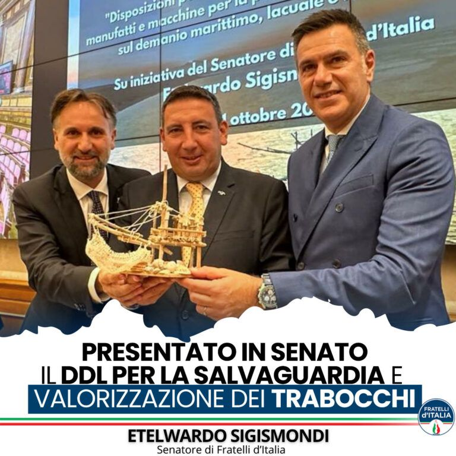
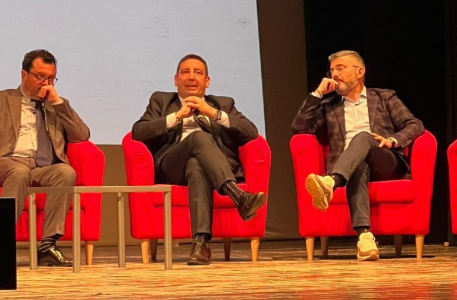
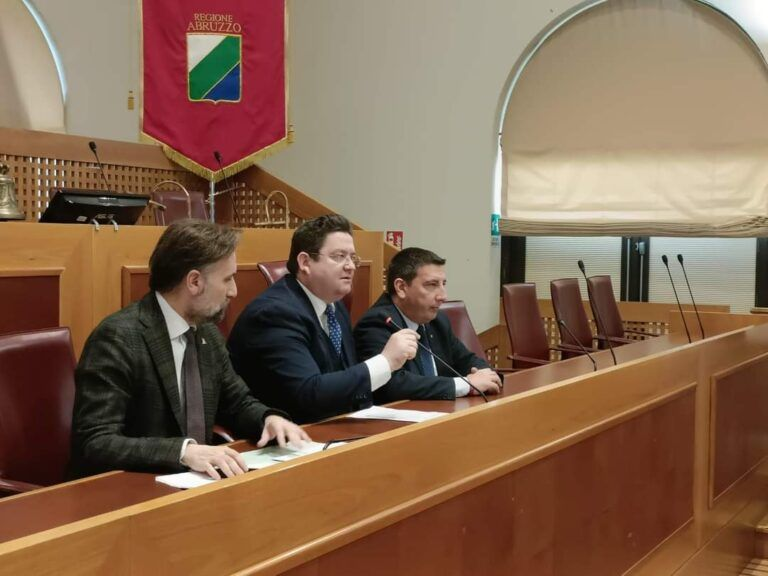
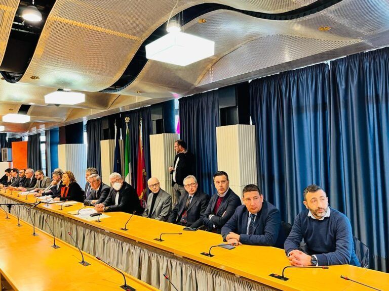
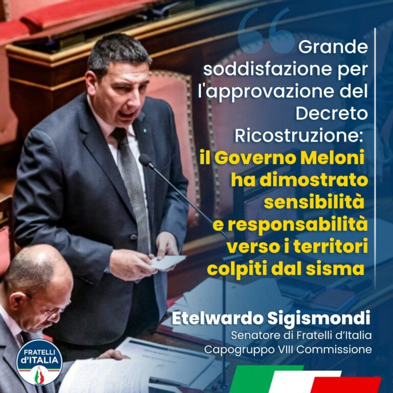

Four years of the Meloni government: over three hundred people from Abruzzo at the Bari rally
Why it matters: The regional coordinator gauges local support: many participants hold no party card.
Read
Press releases
The complete archive of press releases, in chronological order. Each entry shows setting, topic, status at the date and a line on why it matters.
42 items of 42
Why it matters: The regional coordinator gauges local support: many participants hold no party card.

Why it matters: If Parliament passes the bill, the four Abruzzo courts will no longer depend on yearly extensions.
The sub-provincial courts of Abruzzo

Why it matters: The four sub-provincial courts of Abruzzo aim at a structural rescue, not another extension.
The sub-provincial courts of Abruzzo

Why it matters: The renewed Security and Defence contract provides average raises of about 200 euros a month.

Why it matters: Funds to secure the Santa Maria district in Chieti and a festival for the coastal villages.

Why it matters: The tax-wedge cut is worth, according to the senator, an extra 100 euros a month in pay packets.

Why it matters: Municipalities compete on environment and mobility; the winner gets one million euros for its project.

Sigismondi ” In Abruzzo we have strong, authoritative and competent candidates”. The candidates of Fratelli d’Italia were officially presented this morning for the…
Why it matters: More resources to cover the higher costs the regional health system has to bear.

Why it matters: Over 1,300 Toto group employees protected and motorway tolls frozen at 2017 levels.
Infrastructure and transport links

Why it matters: Extension and new staffing tables aim to reopen and strengthen Abruzzo’s courts.
The sub-provincial courts of Abruzzo
Why it matters: Projects taken out of the PNRR are not scrapped but covered by other funding programmes.
Why it matters: The four courts remain operational pending the reform of judicial geography.
The sub-provincial courts of Abruzzo

Why it matters: The Regions could step in to repair trabocchi damaged by storms and high tides.

Why it matters: Schools in the earthquake areas keep their classes until the 2028/2029 school year.
Post-earthquake reconstruction

Why it matters: Collapsed or demolished trabocchi could be rebuilt on the same site.

Why it matters: More resources for the strategic projects planned by the Abruzzo Region.

The culpable delays and the obstruction attempts of the centre-left count for nothing against the incisiveness of Marsilio and of the current national government”. I…
Infrastructure and transport links

The variant to the Provincial Territorial Coordination Plan (PTCP) adopted by the Province of Chieti, led by President Francesco Menna and the centre-left, was conceived…

Why it matters: Lot designs move forward to cut train travel times between Pescara and Rome.
Infrastructure and transport links

I welcome with enthusiasm and great satisfaction the new members joining Fratelli d'Italia in the province of Chieti, in the persons of Tiziana Magnacca, former mayor of…

Why it matters: A peripheral district of Pescara leaves the crime pages and starts its regeneration.

“The launch of the tenders for the works relating to the doubling of the Pescara-Roma railway line crystallises an unequivocal fact. That the Meloni government and the…
Infrastructure and transport links

Congratulations to the new President of the Region, Francesco Roberti, and to the whole Molise centre-right for the important victory achieved. A weighty victory that…
Why it matters: The four sub-provincial courts, open until 1 January 2025, can strengthen their staffing.
The sub-provincial courts of Abruzzo
On the death of Silvio Berlusconi Sigismondi expresses his personal condolences and those of Fratelli d’Italia Abruzzo, recalling his Government’s action after the L’Aquila earthquake.
Why it matters: The Abruzzo stages put the region in front of millions of viewers, to the benefit of tourism.

Why it matters: More safety on a heavy-freight road between Abruzzo and Molise, scene of many accidents.
Infrastructure and transport links

Abruzzo hosts the 5th interregional Bersaglieri rally for the 60th anniversary of the Lanciano section; the senator thanks the Corps for its work in Italy and abroad.

Why it matters: Uniform rules for disaster-hit areas, including measures for social and economic recovery.
Post-earthquake reconstruction

At Vinitaly 2023, the international wine and spirits fair, Abruzzo wineries show excellences exported all over the world, between tradition and innovation.

Extraordinary is the work carried out by the President of the Region, Marco Marsilio, and by his government team over these four years of the legislature. Fundamental…

It is excellent news that the Finance Committee of the Chamber yesterday gave the green light to the decree on Superbonus credits. The approval of the amendment…
Post-earthquake reconstruction

Why it matters: A supply chain of five thousand members bringing Abruzzo wines to more than fifty countries.

Why it matters: Fewer bureaucratic steps to speed up reconstruction in the earthquake-hit areas.
Post-earthquake reconstruction

Why it matters: The commissioner’s advances help businesses pay VAT on reconstruction invoices.
Post-earthquake reconstruction

Why it matters: Modern, safe hospitals for the areas of Avezzano, Vasto and Lanciano.

Why it matters: Stalled sites to be unblocked, staff stabilised and school classes preserved in earthquake areas.
Post-earthquake reconstruction

Why it matters: Up to 30% of public-competition posts may be reserved for orphans and spouses of 2009 and 2016 quake victims.
Post-earthquake reconstruction

Today, together with my colleague Guido Quintino Liris, we met the President of the Court, Cecilia Angrisano, the Public Prosecutor at the Juvenile Court, David
The sub-provincial courts of Abruzzo

Yesterday, in the interview I gave to Radio Radicale, I wanted to express my opinion on the European Parliament's vote regarding the obligation to purchase electric

Why it matters: On the table: the needs of Abruzzo’s port system and the upgrade of the Adriatic corridor.
Infrastructure and transport links
Press releases already published by the Senator and his staff, reproduced in full. Headlines have been rewritten editorially without altering the facts; the full text is always the original. Period covered by the archive: 30 January 2023 – 4 September 2026